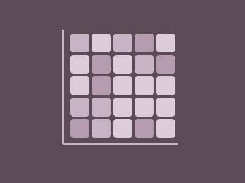

Statistical Graphics & Visualization
Student Mental Health
What actually predicts student burnout? Using a 150,000-student dataset, our team built visualizations in R to test common assumptions about grades, pressure, sleep, and anxiety.

The data
We worked with the Student Mental Health and Burnout Dataset from Kaggle, a large synthetic dataset covering demographics (age, gender, course, year), academic indicators (CGPA, attendance, study hours), psychological scores (anxiety, depression, stress, academic pressure), lifestyle factors (sleep, activity, screen time), and social and financial indicators.
Research questions
Each team member owned one question and the visualization best suited to answer it.
RQ1 · Bar chart
How does burnout vary across student demographic and social groups?
RQ2 · Binned heat map · My question
Are high-performing students (high CGPA) more susceptible to burnout under academic pressure than their lower-performing peers?
RQ3 · Density contour plot
How does the relationship between sleep and anxiety differ across burnout levels?
My analysis
A common assumption is that high achievers burn out hardest when the pressure is on. To test it, I binned students by CGPA and by academic pressure level, then built a heat map where each tile shows the share of students in that group with high burnout. A heat map made it possible to compare every combination of the two variables at once.
Finding
Every tile landed between roughly 31% and 36% high burnout. Students with low pressure and high CGPA burned out at about the same rate as students with high pressure and low CGPA.
In other words, neither CGPA nor academic pressure was a useful predictor of high burnout in this data, alone or together. That pointed us toward other factors, such as mental and physical health and study-life balance.
Team findings
- Demographics (RQ1): burnout was split roughly evenly into thirds across every academic year and gender, so it's a shared student experience rather than concentrated in one group.
- Grades & pressure (RQ2): no meaningful pattern; high-burnout rates stayed within a narrow 31–36% band.
- Sleep & anxiety (RQ3): the clearest signal. Low-burnout students clustered around 8–9 hours of sleep, while one high-burnout cluster sat at just 4–5 hours with higher anxiety.
Reflection
Key takeaway
A "no pattern" result is still a result. Showing clearly that an assumed relationship isn't there redirects attention to the factors that matter.
Because the dataset is synthetic, these findings describe the data rather than real students. A natural next step would be to test whether the sleep and anxiety relationship holds in survey data from actual students.